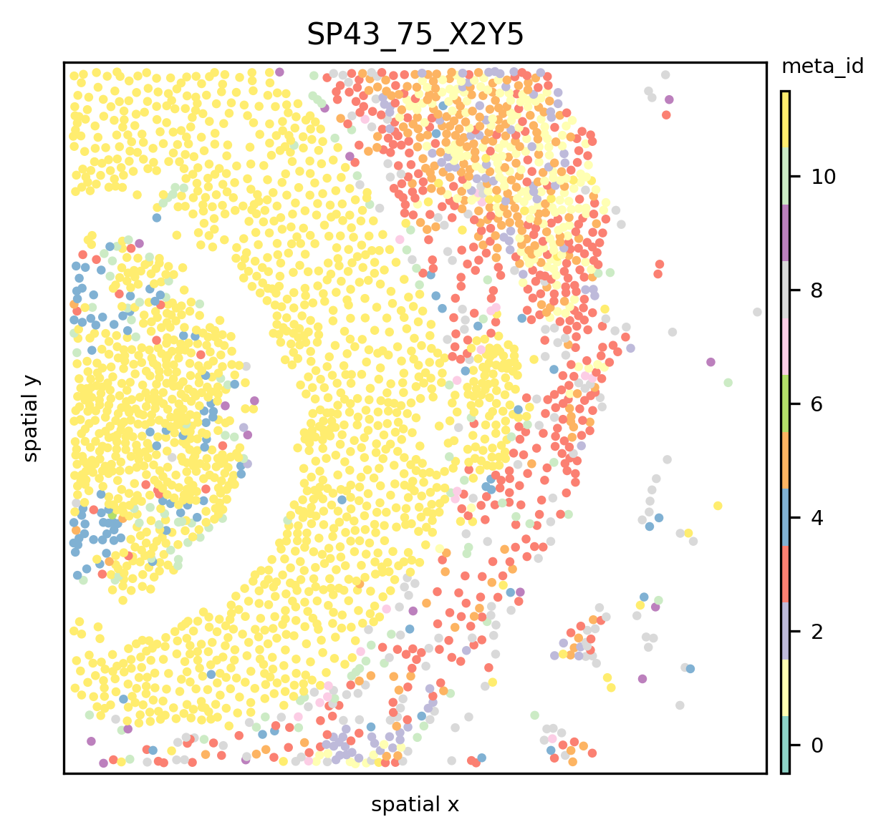

Quickstart¶
ATHENA is an open-source computational framework written in Python that facilitates the visualization, processing and analysis of (spatial) heterogeneity from spatial omics data. ATHENA supports any spatially resolved dataset that contains spatial transcriptomic or proteomic measurements, including Imaging Mass Cytometry (IMC), Multiplexed Ion Beam Imaging (MIBI), multiplexed Immunohistochemisty (mIHC) or Immunofluorescence (mIF), seqFISH, MERFISH, Visium.
Important¶
You are strongly advised to read the sections:
Note on Phenotype Encodings
Note on Segmentation Masks
at the end of this document.
Requirements¶
To use all the capabilities of ATHENA one needs the (cell-) segmenation masks for a sample and the omics-profiles of the observations in the sample (as extracted from the high-dimensional images produced by different omics-technologies).
However, it is also possible to use ATHENA (with some limitations) without segmentation masks and the omics-profiles and just the single-observation coordinates and a classification of those observations (phenotypes).
Further Resources¶
A more comprehensive tutorial on IMC data can be found here
A tutorial on how to load your data can be found here
import athena as ath
import numpy as np
import pandas as pd
import seaborn as sns
from pathlib import Path
pd.set_option("display.max_columns", 5)
print(ath.__version__)
<frozen importlib._bootstrap>:219: RuntimeWarning: numpy.ndarray size changed, may indicate binary incompatibility. Expected 80 from C header, got 88 from PyObject
0.1.2
Load Example Data¶
To use ATHENA you need to load the data in a SpatialOmics instance (see below, here for a general description and here for a more detailed tutorial). The structure of the SpatialOmics instance is very similar to the AnnData.
For this tutorial we provide a small example of a populated SpatialOmics instance. Meta data for each stored sample can be found in so.spl. You can access the data by indexing the different attributes by the sample name (so.X[spl], so.obs[spl, …).
so = ath.dataset.imc_quickstart()
so
INFO:numexpr.utils:NumExpr defaulting to 8 threads.
warning: to get the latest version of this dataset use `so = sh.dataset.imc(force_download=True)`
SpatialOmics object with 5505 observations across 2 samples.
X: 2 samples,
spl: 2 samples,
columns: ['pid', 'cell_count', 'immune_cell_count']
obs: 2 samples,
columns: ['meta_label', 'id', 'core', 'cell_type', 'meta_id', 'CellId', 'x', 'cell_type_id', 'tumor_immune_id', 'tumor_immune', 'phenograph_cluster', 'y']
var: 2 samples,
columns: ['target', 'fullstack_index', 'metal_tag', 'feature_type', 'channel', 'full_target_name']
G: 0 samples,
keys: []
masks: 2 samples
keys: [{'cellmasks'}]
images: 0 samples
samples = so.spl.index
samples
Index(['SP43_75_X2Y5', 'SP41_239_X11Y3_165'], dtype='object', name='core')
How to Create a SpatialOmics Instance with Dummy Data¶
# create dummy data
n_obs = 100 # number of observations (cells)
n_var = 5 # number of features
samples = ['sample_'+ str(i) for i in range(5)] # sample names
mask_dim = [100,100] # dimension of segmentation masks
# sample-level meta data
spl = pd.DataFrame({'samples': samples, 'age': np.random.choice(range(50,80), len(samples))}).set_index('samples')
# observation-level meta data
obs = pd.DataFrame({
'phenotype': range(n_obs),
'x': np.random.randint(0, mask_dim[0], n_obs),
'y': np.random.randint(0, mask_dim[1], n_obs)})
# observation-level omics profiles
X = pd.DataFrame(np.random.rand(n_obs, n_var), columns=['var_' + str(i) for i in range(n_var)])
# high-dimensional images of samples, first dimension is the number of features, i.e. multiplexing
img = np.random.rand(n_var, *mask_dim)
# segmentation masks of images
mask = np.zeros(mask_dim, dtype=int)
# feature annotation
var = pd.DataFrame({'target': ['var_' + str(i) for i in range(n_var)]})
# create SpatialOmics instance
from spatialOmics import SpatialOmics
dummy = SpatialOmics()
dummy.spl = spl
for spl in samples:
dummy.obs[spl] = obs
dummy.X[spl] = X
dummy.var[spl] = var
dummy.images[spl] = img
dummy.masks[spl] = {'cellmasks': mask}
dummy
SpatialOmics object with 500 observations across 5 samples.
X: 5 samples,
spl: 5 samples,
columns: ['age']
obs: 5 samples,
columns: ['y', 'phenotype', 'x']
var: 5 samples,
columns: ['target']
G: 0 samples,
keys: []
masks: 5 samples
keys: [{'cellmasks'}]
images: 5 samples
Minimal Working Example¶
Depending on your use case you do not need to populate all attributes of the SpatialOmics instance.
For a minimal working example you only need to populate the .obs attribute with the observation coordinates and a label.
dummy_min = SpatialOmics()
dummy_min.obs[spl] = obs
dummy_min
SpatialOmics object with 100 observations across 1 samples.
X: 0 samples,
spl: 0 samples,
columns: []
obs: 0 samples,
columns: ['y', 'phenotype', 'x']
var: 0 samples,
columns: []
G: 0 samples,
keys: []
masks: 0 samples
keys: [set()]
images: 0 samples
Sample-level Meta Data¶
Sample-level meta data is stored in the so.spl attribute but not required to use ATHENA.
so.spl.head(3)
| pid | cell_count | immune_cell_count | |
|---|---|---|---|
| core | |||
| SP43_75_X2Y5 | 75 | 2771 | 940 |
| SP41_239_X11Y3_165 | 239 | 2734 | 412 |
Observation-level Meta Data¶
Observation-level meta data is stored in the so.obs attribute and required to use ATHENA. At least the coordinates of the
observations along with some classification of those (phenotypes) are required.
spl = so.spl.index[0]
so.obs[spl].head()
| core | meta_id | ... | y | x | |
|---|---|---|---|---|---|
| cell_id | |||||
| 1 | SP43_75_X2Y5 | 9 | ... | 1.142857 | 33.107143 |
| 2 | SP43_75_X2Y5 | 3 | ... | 4.868613 | 43.693431 |
| 3 | SP43_75_X2Y5 | 10 | ... | 5.467391 | 61.326087 |
| 4 | SP43_75_X2Y5 | 8 | ... | 2.353659 | 79.987805 |
| 5 | SP43_75_X2Y5 | 3 | ... | 2.026316 | 128.302632 |
5 rows × 12 columns
Observation-level Omics Profiles¶
The omics-profiles of the obserations are stores in the so.X attribute. These are the gene / protein expression values of the observations (most likely single cells or patches). You only need to provide this information if you want to use metrics.quadratic_entropy().
so.X[spl].head()
| target | H3 | H3K28me3 | ... | PARP | DNA2 |
|---|---|---|---|---|---|
| cell_id | |||||
| 1 | 8.252318 | 0.442500 | ... | 0.674024 | 9.002035 |
| 2 | 12.754854 | 1.436547 | ... | 0.852686 | 19.567230 |
| 3 | 1.946717 | 0.470739 | ... | 0.858645 | 2.316239 |
| 4 | 7.552009 | 0.562183 | ... | 0.939330 | 8.991525 |
| 5 | 15.079700 | 0.492224 | ... | 0.828238 | 12.647001 |
5 rows × 34 columns
Compute Graphs¶
ATHENA can construct knn, radius and contact graphs. By default, ATHENA tries to build the graphs from segmentation masks. Without segmentation masks, one can only use the kNN and radius graph functionality of ATHENA. For the contact graph the segmentation masks are required. See the main tutorial to see how the graph construction can be customized.
From Segmentation Masks¶
Provide the spatialOmics instance and sample name for which the graph should be computed. Furthermore, builder_type defines the type of graph that is constructed and mask_key the segmentation masks that should be used (stored at so.masks[spl][MASK_KEY])
ath.graph.build_graph(so, spl, builder_type='knn', mask_key='cellmasks')
so.G[spl].keys() # graphs are stored at so.G[spl]
dict_keys(['knn'])
One can build multiple graph-representations for each sample by simply calling build_graph again with another builder_type
ath.graph.build_graph(so, spl, builder_type='radius', mask_key='cellmasks')
so.G[spl].keys() # graphs are stored at so.G[spl]
dict_keys(['knn', 'radius'])
From Coordinates¶
One can build the knn and radius graphs from coordinates only by setting mask_key=None and providing the column names of the coordinates with coordinate_keys.
ath.graph.build_graph(so, spl, builder_type='knn', mask_key=None, coordinate_keys=('x', 'y'))
ath.graph.build_graph(so, spl, builder_type='radius', mask_key=None, coordinate_keys=('x', 'y'))
so.G[spl].keys() # graphs are stored at so.G[spl]
dict_keys(['knn', 'radius'])
Visualise the Data¶
For some of the plotting functionalities ATHENA requires the x,y coordinates of each observation. They can be extracted from segmentation masks with
ath.pp.extract_centroids(so, spl, mask_key='cellmasks')
The data can then be visualised with
ath.pl.spatial(so, spl, attr='meta_id')
/Users/art/Documents/projects/athena/athena/plotting/visualization.py:217: UserWarning: Matplotlib is currently using module://matplotlib_inline.backend_inline, which is a non-GUI backend, so cannot show the figure.
fig.show()

or if one wants to use custom coordinates, one can provide coordinate keys that are stored in the so.obs[spl] dataframe ATHENA should use
ath.pl.spatial(so, spl, attr='meta_id', coordinate_keys=['x', 'y'])

See the main tutorial and the docs to see how the plotting can be customized.
Compute Metrics¶
Once the graphs are built we can use the quantifications methods from the ath.metrics and the ath.neigh module. Again, provide the spatialOmics instance and the sample name for which the metric should be computed. Furthermore, since ATHENA quantifies the phenotypic heterogeneity in the data, provide the column name that indicates the different phenotypes of each observation with attr and specify the graph topologie to use with graph_key.
Most of the metrics can be computed either on a sample-level (i.e. 1 value per sample) or on a observation-level (i.e. 1 value per observation). This behaviour can be controlled by setting local={True,False}.
# compute shannon entropy for each observation, once for the radius graph and once for the knn graph
ath.metrics.shannon(so, spl, attr='meta_id',graph_key='radius')
ath.metrics.shannon(so, spl, attr='meta_id',graph_key='knn')
# compute the shannon entropy for the whole sample
ath.metrics.shannon(so, spl, attr='meta_id', local=False)
The results for local=True (default) are stores in so.obs as {method}_{attr}_{graph_key}.
so.obs[spl].head()
| core | meta_id | ... | shannon_meta_id_radius | shannon_meta_id_knn | |
|---|---|---|---|---|---|
| cell_id | |||||
| 1 | SP43_75_X2Y5 | 9 | ... | 1.921928 | 1.918296 |
| 2 | SP43_75_X2Y5 | 3 | ... | 1.918296 | 1.918296 |
| 3 | SP43_75_X2Y5 | 10 | ... | 2.446439 | 2.521641 |
| 4 | SP43_75_X2Y5 | 8 | ... | 2.419382 | 2.128085 |
| 5 | SP43_75_X2Y5 | 3 | ... | 1.870254 | 1.459148 |
5 rows × 14 columns
The results for local=False are stored in so.spl
so.spl.loc[spl].head()
pid 75.000000
cell_count 2771.000000
immune_cell_count 940.000000
shannon_meta_id 3.311329
Name: SP43_75_X2Y5, dtype: float64
Note On Phenotype Encodings¶
We advise the users to use numeric phenotype encodings when computing metrics. If one has label names stored in a pd.DataFrame as label_names one can easily create numeric labels by
df = pd.DataFrame({'label_names': ['A', 'B', 'B', 'C']})
df['labels_names_id'] = df.groupby('label_names').ngroup()
Furthermore, some functions require a strict categorical encoding. Thus the columns dtype should be set to categorical and include all categories across the samples. This can be achived by running the following snippet for all categorical columns in so.obs[spl]
# collect all occurences in the dataset
i = set()
for spl in so.spl.index:
i.update(so.obs[spl]['meta_id'].values)
# define categorical dtype
dtype = pd.CategoricalDtype(i)
for spl in so.spl.index:
so.obs[spl].loc[:,'meta_id'] = so.obs[spl]['meta_id'].astype(dtype)
Note On Segmentation Masks¶
Segmentation masks should be stored as np.ndarray and have int encodings with 0 being background. The labels do not need to be sequential but aligned with the index in so.obs[spl], i.e. the label of the segmentation mask should be the same as in the index of the so.obs dataframe for a given observation. One can test that the labels overlap
ids = np.unique(so.masks[spl]['cellmasks'])
ids = ids[ids!=0] # remove background label
s_mask = set(ids)
s_obs = set(so.obs[spl].index.values)
assert len(s_obs - s_mask) == 0
assert len(s_mask - s_obs) == 0